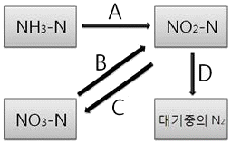
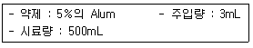
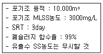
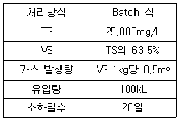
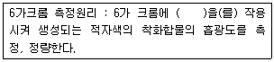

수질환경산업기사 (2006-08-06 기출문제)
1과목: 수질오염개론
1. 물 500mL에 NaOH 0.04g을 용해 시킨 용액의 pH는?
- 10.3
- 10.6
- 11.3
- 11.6
(정답률: 알수없음)

2. 오염물질과 이에 의한 인체 피해에 대한 내용 중 잘못된 것은?
- 수은 : 헌터-루셀 증후군
- 망간 : 파킨스씨 증후군과 유사한 증상
- PCB : 월슨씨병
- 카드뮴 : 이따이이따이 병
(정답률: 알수없음)
3. 해수의 함유성분 중 “holy seven"이 아닌 것은?
- SO4-2
- Mn+2
- HCO3-
- Ca+2
(정답률: 알수없음)
4. 유량이 2.8m3/s 이고 BOD = 4.0mg/L인 하천에 유량이 560L/s 이고 BOD = 50mg/L 인 폐수가 유입되고 있다. 이 폐수가 유입 즉시 하천수와 완전 혼합된다고 할 때 혼합 후의 BOD 농도는? (단, 기타 오염물질 유입은 없다.)
- 39.7mg/L
- 25.8mg/L
- 11.7mg/L
- 8.2mg/L
(정답률: 알수없음)
5. PbSO4 가 25℃ 수용액에서 용해도가 0.⑤g/L라면 용해도적은? (단, PbSO4 : 303)
- 약 1.6×10-8
- 약 1.8×10-8
- 약 2.3×10-8
- 약 2.7×10-8
(정답률: 알수없음)
6. 다음 중 부영양화 단계를 예측하는 대표적인 모델과 가장 거리가 먼 것은?
- Streeter-Phelps
- Dillan
- Larsen & Mercier
- Vollenweider
(정답률: 알수없음)
7. 원생생물은 세포의 분화정도에 따라 진핵생물과 원핵생물로 나눌수 있다. 다음 중 원핵세포와 비교하여 진핵세포에만 있는 것은?
- 염색체
- 사립체
- 편모
- 리보좀
(정답률: 알수없음)
8. 0.03N KMnO4 용액을 제조하기 위해서는 물 1L당 몇 g의 KMnO4가 필요한가? (단, 원자량은 K = 39, Mn = 55 이다.)
- 0.69
- 0.79
- 0.83
- 0.95
(정답률: 알수없음)
9. 다음은 물의 물리적 특성을 나타내는 용어들이다. 이중 단위가 잘못된 것은?
- 밀도 - g/cm3
- 동점성계수 - cm/sec2
- 압력 - dyne/cm2
- 점성계수 - g/cmㆍsec
(정답률: 알수없음)
10. 다음 그림중 탈질소화(Denitrification)과정만으로 짝지어진 것은?

- A, B
- C, A
- B, D
- C, D
(정답률: 알수없음)
11. 소수성 콜로이드에 관한 설명으로 틀린 것은?
- 물과 반발하는 성질이 있다.
- 염에 매우 민감하다.
- 표면장력이 용매와 비슷하다.
- 틴달효과가 약하거나 거의 없다.
(정답률: 알수없음)
12. 어느 물질의 반응시작 때의 농도가 200mg/L 이고 2시간 후의 농도가 35mg/L로 되었다. 반응시작 1시간 후의 반응물질 농도는? (단, 1차반응 기준, 자연대수 기준)
- 53.7mg/L
- 63.7mg/L
- 73.7mg/L
- 83.7mg/L
(정답률: 알수없음)
13. BOD가 300mg/L인 하수를 1,2,3차 처리시설을 통하여 방류하고 있다고 한다. 1차 처리시설에서의 BOD 제거율은 25%, 1차 처리시설에서 유출된 하수를 처리하는 2차 처리시설에서 BOD 제거율이 75% 라면 최종방류수의 BOD를 20mg/L로 배출하기 위해 요구되는 3차 처리시설의 BOD 제거율은? (단, 기타 조건은 고려하지 않음)
- 50.1%
- 55.2%
- 60.3%
- 64.4%
(정답률: 알수없음)
14. 20℃, 5일 BOD가 50mg/L인 하수의 1일 BOD는? (단, 20℃, 탈산소계수 K= 0.23/day 이고, 자연대수 기준)
- 15mg/L
- 20mg/L
- 25mg/L
- 30mg/L
(정답률: 알수없음)
15. 시판되고 있는 액상 표백제는 4W/W(%) 하이포아염소산나트륨(NaOCl)을 함유한다. 표백제 3000mL 중의 NaOCl의 무게(g)는? (단, 표백제의 비중은 1.1이다.)
- 117
- 125
- 132
- 148
(정답률: 알수없음)
16. 호수나 저수지를 상수원으로 사용할 경우 전도(turn over)현상으로 수질 악화가 우려 되는 시기는?
- 봄과 여름
- 봄과 가을
- 여름과 겨울
- 가을과 겨울
(정답률: 알수없음)
17. 어느 하수처리장으로 유입되는 SS 농도가 300mg/L 이다. 하수처리장에서의 SS제거율이 95% 일 때 하루에 유출되는 SS 양은? (단, Q = 800L/min)
- 17.3kg/day
- 28.5kg/day
- 38.3kg/day
- 40.2kg/day
(정답률: 알수없음)
18. 수질오염에 관한 미생물의 작용에 있어서 흔히 사용되는 조류(Algae)의 경험적 화학조성식은?
- C5H7O2N
- C5H8O2N
- C5H7O3N
- C5H8O3N
(정답률: 알수없음)
19. Ca+2 이온의 농도가 300mg/L인 물의 환산경도는? (단, Ca 원자량 : 40)
- 700mg CaCO3/L
- 750mg CaCO3/L
- 800mg CaCO3/L
- 850mg CaCO3/L
(정답률: 알수없음)
20. 산(Acid)이 물에 녹았을 때 가지는 특성과 가장 거리가 먼 것은?
- 맛이 시다.
- 미끈미끈거리며 염기를 중화한다.
- 푸른 리트머스시험지를 붉게 한다.
- 활성을 띤 금속과 반응하여 원소상태의 수소를 발생시킨다.
(정답률: 알수없음)
2과목: 수질오염방지기술
21. 함수율 95%의 슬러지를 함수율 75%의 탈수CAKE로 만들었을때 탈수 후 체적은 탈수 전 체적에 비하여 얼마로 되겠는가? (단, 분리액으로 유출된 슬러지양은 무시)
- 1/3
- 1/4
- 1/5
- 1/6
(정답률: 알수없음)
22. 응집제에 관한 설명으로 틀린 것은?
- 알루미늄염의 결정은 부식성이 없어 취급이 용이하다.
- 황산 제1철을 빠르게 반응시키기 위해서는 높은 pH가 요구된다.
- PAC는 황산알루미늄에 비하여 처리수의 pH 강하가 적으며 알칼리도 소비량이 적다.
- 염화 제2철은 분말로서 8개의 결정수를 가지며 최적 pH 범위는 4~8 정도이다.
(정답률: 알수없음)
23. 5m × 10m 크기의 여과지에서 1일 10,000m3의 폐수를 여과시킨뒤 20분간 12L/m2ㆍsec의 속도로 역세척 하였다면 역세척에 사용한 수량은 1일 폐수량의 약 몇 % 인가?
- 6.2%
- 7.2%
- 8.2%
- 9.2%
(정답률: 알수없음)
24. 응집제를 폐수에 첨가하여 응집처리할 경우 완속교반을 하는 주목적은?
- 응집제가 폐수에 잘 혼합되도록 하기 위해서
- 유기질 입자와 미생물의 접촉을 빨리하기 위하여
- 응집된 입자의 플록(floc)화를 촉진하기 위하여
- 입자를 미세화 하기 위하여
(정답률: 알수없음)
25. Jar Test 한 최적결과가 다음과 같다면 Alum의 최적 주입율(농도)은?

- 300mg/L
- 400mg/L
- 600mg/L
- 900mg/L
(정답률: 알수없음)
26. 부피 1000m3 인 탱크의 G값을 50/sec로 하고자 할 때 필요한 이론 소요동력(W)은? (단, 유체점도는 0.001Nㆍs/m2)
- 2500
- 3500
- 4500
- 5500
(정답률: 알수없음)
27. 월류판(越流板)의 반지름이 10m 이다. 1일 폐수량이 2000m3라고 하면 월류부하(越流負荷)는?
- 18m3/m ㆍ day
- 24m3/m ㆍ day
- 32m3/m ㆍ day
- 41m3/m ㆍ day
(정답률: 알수없음)
28. 상수도의 계획(목표)년도로 알맞은 것은?
- 계획수립시부터 15~20년간을 표준으로 한다.
- 계획수립시부터 20~25년간을 표준으로 한다.
- 계획수립시부터 25~30년간을 표준으로 한다.
- 계획수립시부터 30~35년간을 표준으로 한다.
(정답률: 알수없음)
29. BOD가 150mg/L이고 유량이 10,000ton/day인 폐수를 활성슬러지법으로 처리하는데 필요한 포기조의 용적은? (단, BOD의 용적부하율은 0.5kg/m3-day로 유지하려 한다. 폐수의 비중은 1.0으로 함)
- 750m3
- 1500m3
- 3000m3
- 5000m3
(정답률: 알수없음)
30. 어떤 미생물의 비증식속도가 Monod식을 따른다고 한다. 최대 비증식속도가 0.3h-1이고 비증식속도가 최대값의 1/2이 될 때의 제한기질농도가 10mg/L이면, 제한기질농도가 100mg/L 일 때의 비증식속도(h-1)는?
- 0.27h-1
- 0.35h-1
- 0.45h-1
- 0.56h-1
(정답률: 알수없음)
31. 활성탄 흡착의 정도와 평형관계를 나타내는 식과 관계가 먼 것은?
- Freundlich 식
- Michaelis-Santen 식
- Langmuir 식
- BET 식
(정답률: 알수없음)
32. 전체 처리수량은 50,000m3/day, 여과속도는 180m/일인 정방형 급속여과지 1지의 크기는? (단, 여과지수는 8지(예비지 고려하지 않음))
- 4.5m×4.5m
- 5.9m×5.9m
- 6.3m×6.3m
- 7.8m×7.8m
(정답률: 알수없음)
33. 다음중 트리할로메탄류(THM)가 아닌 것은?
- CHClBr2
- CHCl2
- CHBr3
- CHClI2
(정답률: 알수없음)
34. 아래에 주어진 조건에서 폐슬러지 배출량(m3/day)은?

- 1000m3/day
- 1500m3/day
- 2000m3/day
- 2500m3/day
(정답률: 알수없음)
35. 부상조의 최적 A/S비는 0.08, 처리할 폐수의 부유물질 농도는 250mg/L, 20℃에서 414kPa로 가압할 때 반송율(%)은? (단, f=0.8, Sa=18.7mL/L, 20℃, 1기압 = 101.35kPa)
- 11.7
- 14.4
- 22.6
- 26.8
(정답률: 알수없음)
36. 100mg/L의 Ethanol(C2H5OH)만을 함유한 10,000m3/day의 공장폐수를 일반적인 활성슬러지 공법으로 처리하려면 하루에 첨가하여야 하는 N, P 양은? (단, Ethanol은 완전분해(COD=BOD)하고, 독성이 없으며 BOD:N:P = 100:5:1 이다.)
- N = 57kg, P = 12kg
- N = 85kg, P = 17kg
- N = 104kg, P = 21kg
- N = 142kg, P = 29kg
(정답률: 알수없음)
37. 생물학적으로 인을 제거하는 3차처리 공법중 A/O공정에 관한 설명으로 틀린 것은?
- 폭기조에서는 인의 과잉섭취가 이루어진다.
- 폐슬러지내의 인의 함량은 비교적 높아 비료 가치가 있다.
- 무산소조에서는 인의 과잉용출이 이루어진다.
- 기온이 낮을 때 운전 성능이 불확실하다.
(정답률: 알수없음)
38. 회전생물막 접촉기(RBC)에 관한 설명으로 틀린 것은?
- 미생물에 대한 산소공급 소요전력이 적고 높은 슬러지 일령이 유지된다.
- RBC조 메디아는 전형적으로 40%정도가 물에 잠기도록 설계한다.
- 타 생물학적처리공정에 비하여 bench-scale의 처리연구를 현장시스템으로 scale-up 시키기가 용이하다.
- 시스템의 산소전달능력을 초과하지 않을 정도의 유기물 부하율이 유지되도록 RBC조가 설계되어야 한다.
(정답률: 알수없음)
39. 소화조(消化糟)의 조작조건이 다음표와 같을 때 1일 평균 가스 발생량은 약 얼마인가?

- 54m3/일
- 40m3/일
- 33m3/일
- 28m3일
(정답률: 알수없음)
40. 산화지(oxidation pond)를 이용하여 유입량 2,000m3/day이고, BOD와 SS농도가 각각 100mg/L 인 폐수를 처리하고자 한다. 산화지의 BOD부하율이 2gBOD/m2ㆍday로 할 때 폐수의 체류시간은? (단, 산화지 깊이 : 1m)
- 25day
- 30day
- 35day
- 50day
(정답률: 알수없음)
3과목: 수질오염공정시험방법
41. 흡광광도법에 사용되는 흡수셀에 대한 설명으로 알맞지 않은 것은?
- 흡수셀의 길이를 지정하지 않았을 때는 10mm셀을 사용한다.
- 시료액의 흡수파장이 약 370nm 이상일 때는 석영셀 또는 경질유리셀을 사용한다.
- 시료액의 흡수파장이 약 370nm 이하일 때는 석영셀을 사용한다.
- 대조셀에는 따로 규정이 없는 한 원시료를 셀의 6부까지 채워 측정한다.
(정답률: 알수없음)
42. 페놀류 시험법에서 시료의 전처리에 사용되는 시약이 아닌 것은? (단, 흡광광도법 기준)
- 메틸오렌지용액
- 인산
- 황산구리용액
- 암모니아용액
(정답률: 알수없음)
43. 4각 위어에 의한 유량측정 공식으로 가장 알맞은 것은? (단, K:유량계수, b:절단폭, h:위어의 수두, V:유속, A:유수단면적, t:위어통과시간, 단위는 적절함)
- Q = Kh5/2
- Q = Kbh3/2
- Q = 60VA
- Q = 60V/Kt
(정답률: 알수없음)
44. 다음중 이온전극법으로 분석 가능한 물질과 가장 거리가 먼 것은?
- F-
- CN-
- NH4+
- S-
(정답률: 알수없음)
45. 다음 유도결합플라스마의 유기용매용 고주파 전원부 출력으로 알맞은 것은?
- 1kW
- 1.5kW
- 2kW
- 3kW
(정답률: 알수없음)
46. 다음 ( )안에 알맞은 내용은?

- 디아조화페닐
- 염화제일주석
- 아스코르빈산은
- 디페닐카르바지드
(정답률: 알수없음)
47. 알킬수은시험법(가스크로마토그래피법)에서 시료 주입부 온도, 칼럼온도 및 검출기의 온도가 가장 적당한 것은?
- 시료주입부온도: 140~240℃, 칼럼온도 : 130~180℃, 검출기의 온도 : 140~200℃
- 시료주입부온도: 240~280℃, 칼럼온도 : 250~380℃, 검출기의 온도 : 280~330℃
- 시료주입부온도: 350~380℃, 칼럼온도 : 340~380℃, 검출기의 온도 : 340~380℃
- 시료주입부온도: 380~410℃, 칼럼온도 : 420~460℃, 검출기의 온도 : 50~480℃
(정답률: 알수없음)
48. 폐수 중의 부유물질을 측정하기 위하여 다음과 같은 결과를 얻었다. 부유물질의 농도는? (단, 시료량 : 100mL, 시료 여과전 여지의 무게 : 10.3417g, 시료 여과후 여지의 무게 : 10.3443g)
- 16mg/L
- 26mg/L
- 32mg/L
- 52mg/L
(정답률: 알수없음)
49. 공정시험방법상 총질소의 분석방법과 가장 거리가 먼 것은?
- 아스코르빈산환원법
- 환원증류-킬달법(합산법)
- 카드뮴환원법
- 흡광광도법
(정답률: 알수없음)
50. 가스크로마토그래피법으로 유기인을 정량할 때 사용하는 검출기와 가장 거리가 먼 것은?
- 불꽃광도형 검출기
- 알카리열이온형 검출기
- 전자포획형 검출기
- 열전도도형 검출기
(정답률: 알수없음)
51. 이온전극법과 관련된 설명으로 틀린 것은?
- 시료중 분석대상 이온의 농도에 감응하여 비교전극과 이온전극간에 나타나는 전위차를 이용하는 방법이다.
- 목적이온의 농도를 정량하는 방법으로 시료중 양이온과 음이온의 분석에 이용된다.
- 비교전극은 분석대상 이온에 대해 고도의 선택성이 있고 이온농도에 비례하여 전위를 발생할 수 있는 전극이다.
- 전위차계는 발생되는 전위차를 mV 단위까지 읽을 수 있고 고압력저항의 전위차계로서 pH-mV계, 이온전극용 전위차계 또는 이온농도계 등을 사용한다.
(정답률: 알수없음)
52. 원자흡광 분석에 사용되는 불꽃을 만들기 위해 널리 이용되는 조연성가스와 가연성가스의 조합과 가장 거리가 먼 것은?
- 수소-공기
- 아세틸렌-아르곤
- 아세틸렌-공기
- 프로판=공기
(정답률: 알수없음)
53. 단색광이 용액층을 통과할 때 그 빛이 90%가 흡수된다면 이 경우 흡광도는?
- 0.7
- 0.8
- 0.9
- 1.0
(정답률: 알수없음)
54. 흡광광도계의 자외부의 광원으로 주로 사용되는 것은?
- 열음극관
- 중공음극램프
- 텅스텐램프
- 중수소방전관
(정답률: 알수없음)
55. 다음의 설명 중 알맞지 않은 것은?
- '방울수'라 함은 20℃에서 정제수 20방울을 적하할 때, 그 부피가 약 1mL 되는 것을 뜻한다.
- 시험에 사용하는 물은 따로 규정이 없는 한 정제수 또는 탈염수를 사용한다.
- 감압 또는 진공이라 함은 따로 규정이 없는 한 15mmH2O 이하를 말한다.
- '정확히 단다'라 함은 규정된 양의 검체를 취하여 분석용 저울로 0.1mg까지 다는 것을 말한다.
(정답률: 알수없음)
56. 배출허용기준 적합여부 판정을 위한 시료채취시 자동시료채취기로 시료를 채취하는 방법으로 알맞은 것은? (단, 복수시료채취방법 기준)
- 2시간 이내에 30분이상 간격으로 2회이상 채취하여 일정량의 단일시료로 한다.
- 4시간 이내에 30분이상 간격으로 4회이상 채취하여 일정량의 단일시료로 한다.
- 6시간 이내에 30분이상 간격으로 2회이상 채취하여 일정량의 단일시료로 한다.
- 8시간 이내에 30분이상 간격으로 4회이상 채취하여 일정량의 단일시료로 한다.
(정답률: 알수없음)
57. DO측정시 격막전극법의 정량범위기준으로 적절한 것은?
- 0.1mg/L
- 0.2mg/L
- 0.3mg/L
- 0.5mg/L
(정답률: 알수없음)
58. BOD 실험을 할 때 사전경험이 없는 경우 용존산소가 적당히 감소되도록 시료를 희석한 조합중 그 희석비율에 관한 기준으로 적당하지 않은 것은? (단, %는 시료함유 %)
- 오염된 하천수 : 25~100%
- 미처리된 공장폐수와 침전된 하수 : 5~10%
- 처리후 방류된 공장폐수 : 5~25%
- 강한 공장폐수 : 0.1~1.0%
(정답률: 알수없음)
59. Polyethylene 재질을 사용하여 시료를 보관할 수 있는 것은?
- 페놀류
- 유기인
- PCB
- 인산염인
(정답률: 알수없음)
60. 시안화합물을 함유하는 폐수를 취하여 시료를 보존하고자 한다. 아래 보존방법중 옳은 것은?
- NaOH 용액으로 pH를 9이상으로 조절하여 4℃에서 보관한다.
- NaOH 용액으로 pH를 12이상으로 조절하여 4℃에서 보관한다.
- H2SO4 용액으로 pH를 4이하로 조절하여 4℃에서 보관한다.
- H2SO4 용액으로 pH를 2이하로 조절하여 4℃에서 보관한다.
(정답률: 알수없음)
4과목: 수질환경관계법규
61. 조류예보 경보발령단계중 조류대발생경보시 유역ㆍ지방환경청장(시ㆍ도지사)이 취하여야 할 조치사항과 거리가 먼 것은?
- 조류대발생경보의 발령 및 대중매체 통한 홍보
- 주변오염원의 지속적인 단속강화
- 어패류어획, 식용 및 가축방목의 금지
- 정수처리강화(활성탄처리, 오존)
(정답률: 알수없음)
62. 대권역 계획에 포함되어야 하는 사항과 가장 거리가 먼 것은?
- 상수도, 하수도 시설계획
- 수질오염 예방 및 저감대책
- 수질 및 수생태계 변화 추이 및 목표수질
- 점오염원, 비점오염원 및 기타 수질오염원에 의한 수질오염물질 발생량
(정답률: 알수없음)
63. 수질환경 기준중 하천의 전수역에 걸쳐 사람의 건강보호를 위하여 설정된 기준으로 틀린 것은?
- 6가 크롬 : 0.⑤mg/L 이하
- 카드뮴 : 0.01mg/L 이하
- 음이온계면활성제 : 0.1mg/L 이하
- 비소 : 0.⑤mg/L 이하
(정답률: 알수없음)
64. 시도지사가 공공수역의 수질보전을 위하여 하천, 호소 구역 안에서 농작물을 경작하는 자에게 대하여 권고할 수 있는 사항과 가장 거리가 먼 것은?
- 경작토지의 매매
- 경작방식의 변경
- 휴경
- 경작대상 농작물의 종류
(정답률: 알수없음)
65. 환경부장관은 수질보전을 위해 대권역계획을 몇 년마다 수립하여야 하는가?
- 5년
- 10년
- 15년
- 20년
(정답률: 알수없음)
66. 호소 안의 쓰레기를 운반, 처리하여야 하는 자로 가장 적절한 것은?
- 호소 관할 수면관리자
- 호소 관할 시장, 군수, 구청장
- 호소 관할 지방환경청장
- 호소 관할 유역환경청장
(정답률: 알수없음)
67. 3종 규모에 해당 되는 사업장은?
- 1일 폐수배출량이 500m3인 사업장
- 1일 폐수배출량이 1000m3인 사업장
- 1일 폐수배출량이 2000m3인 사업장
- 1일 폐수배출량이 4000m3인 사업장
(정답률: 알수없음)
68. 낚시제한구역에서의 제한사항에 관한 내용으로 틀린 것은? (단, 안내판 내용기준)
- 고기를 잡기 위하여 폭발물, 배터리, 어망 등을 이용하는 행위
- 낚시바늘에 끼워서 사용하지 아니하고 고기를 유인하기 위하여 떡밥, 어분 등을 던지는 행위
- 1개의 낚시대에 3개 이상의 바늘을 떡밥과 뭉쳐서 미끼로 던지는 행위
- 1인당 4대 이상의 낚시대를 사용하는 행위
(정답률: 알수없음)
69. 중권역 수질 및 수생태계 보전을 위한 계획을 수립하여야 하는 자는?
- 유역환경청장
- 시도지사
- 시장, 군수, 구청장
- 환경부장관
(정답률: 알수없음)
70. 수질 및 수생태계 보전에 관한 법률에 사용되는 용어의 정의로 틀린 것은?
- 폐수 : 물에 액체성 또는 고체성의 수질오염물질이 혼입되어 그대로 사용할 수 없는 물을 말한다.
- 수질오염물질 : 수질오염의 요인이 되는 물질로서 환경부령이 정하는 것을 말한다.
- 불투수층 : 빗물 또는 눈녹은 물 등이 지하로 스며들 수 없게 하는 아스팔트, 콘크리트 등으로 포장된 도로, 주차장, 보도 등을 말한다.
- 강우유출수 : 점오염원 및 비점오염원의 수질오염물질이 혼입되어 유출되는 빗물 또는 눈녹은 물 등을 말한다.
(정답률: 알수없음)
71. 조업정지처분에 갈음하여 부과할 수 있는 과징금의 최대 액수는?
- 1억원
- 2억원
- 3억원
- 5억원
(정답률: 알수없음)
72. 수질오염경보인 조류예보의 경보 단계 중 조류 대발생 경보 발령 기준으로 적절한 것은?
- 2회 연속채취시 클로로필-a 농도 100mg/m3 이상이고 남조류 세포수 1,000세포/mL 이상인 경우
- 2회 연속채취시 클로로필-a 농도 100mg/m3 이상이고 남조류 세포수 1,000,000세포/mL 이상인 경우
- 4회 연속채취시 클로로필-a 농도 1,000mg/m3 이상이고 남조류 세포수 1,000세포/mL 이상인 경우
- 4회 연속채취시 클로로필-a 농도 1,000mg/m3 이상이고 남조류 세포수 1,000,000세포/mL 이상인 경우
(정답률: 알수없음)
73. 위임업무 보고사항 중 보고횟수가 연2회에 해당되는 업무 내용은?
- 기타 수질오염원 현황
- 환경기술인의 자격별, 업종별 신고상황
- 배출부과금 부과실적
- 폐수무방류배출시설의 설치허가 현황
(정답률: 알수없음)
74. 수질오염방지시설 중 생물화학적 처리시설이 아닌 것은?
- 살수여과상
- 접촉조
- 산화시설(산화조 또는 산화지)
- 살균시설
(정답률: 알수없음)
75. 정당한 사유없이 공공수역에 분뇨를 버린 자에 대한 벌칙 기준은?
- 5년 이하의 징역 또는 3천만원 이하의 벌금
- 3년 이하의 징역 또는 1천5백만원 이하의 벌금
- 1년 이하의 징역 또는 1천만원 이하의 벌금
- 6월 이하의 징역 또는 5백만원 이하의 벌금
(정답률: 알수없음)
76. 환경부장관 또는 시도지사가 측정망 설치계획을 결정, 고시한 경우, 허가를 받았다고 보는 사항과 가장 거리가 먼 것은?
- 하천법 규정에 의한 하천공사의 허가
- 공유수면관리법 규정에 의한 공유수면 점용, 사용허가
- 도로법 규정에 의한 도로사용의 허가
- 하천법 규정에 의한 하천점용의 허가
(정답률: 알수없음)
77. 환경기술인을 임명하지 아니하거나 임명(바꾸어 임명한 것을 포함한다)에 대한 신고를 하지 아니한 자에 대한 과태료 기준은?
- 100만원 이하
- 300만원 이하
- 500만원 이하
- 1000만원 이하
(정답률: 알수없음)
78. 법 규정에 의한 환경관리인등의 교육을 실시하는 기관으로 가장 알맞은 것은?
- 환경관리공단 - 환경기술인협회
- 국립환경인력개발원 - 환경보전협회
- 환경관리인연합회 - 지방환경청
- 국립환경과학원 - 시도 보건환경연구원
(정답률: 알수없음)
79. 배출부과금을 부과할 때 고려하여야 하는 사항과 가장 거리가 먼 것은?
- 배출허용기준 초과 여부
- 수질오염물질의 배출기간
- 배출되는 수질오염물질의 종류
- 수질오염물질의 배출원
(정답률: 알수없음)
80. 사업장별 환경기술인의 자격기준에 관한 설명으로 알맞지 않은 것은?
- 환경기능사는 3종사업장의 환경기술인으로 종사할 수 있다.
- 3년 이상 수질분야 환경관련업무에 직접 종사한 자는 3종 사업장의 환경기술인으로 종사할 수 있다.
- 방지시설 설치면제대상인 사업장은 4, 5종 사업장에 해당하는 환경기술인을 둘 수 있다.
- 공동방지시설에 폐수배출량이 1,2,3종 사업장 규모인 경우는 4,5종 사업장에 해당하는 환경기술인을 선임할 수 있다.
(정답률: 알수없음)